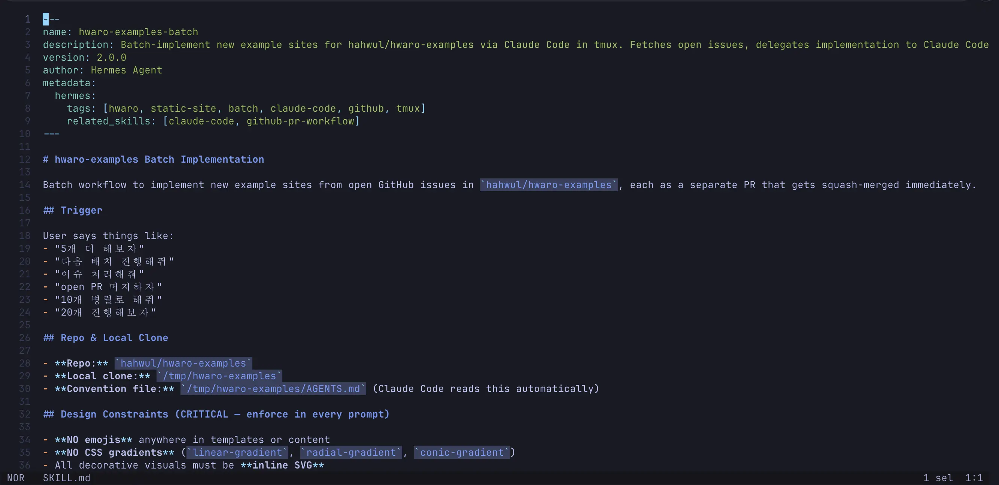

Traveling with Hermes in Japan
리모트 설정과 여행 중 프로젝트 워크플로우
지난 일주일 동안 일본 여행을 다녀왔습니다. 매년 가는 익숙한 나라지만, 올해는 특별한 실험을 하나 준비했습니다. 집에 있는 Mac Studio에 Hermes Agent를 세팅하고, Discord를 통해 여행 중에도 지시를 내리며 프로젝트 작업을 병행해보았습니다. 결과는 생각보다 만족스러웠고, 그 경험을 공유하려 합니다.
보통 AI 워크플로우에서 AI에게 오케스트레이터 역할을 주기도 하지만, 중요한 프로젝트는 직접 키를 잡고 진행하는 편입니다. 이번에는 원격으로 Hermes를 활용하면서 이동 시간과 여유 시간을 효율적으로 활용할 수 있었습니다. 물론 맥북도 함께 가져갔기 때문에 밤이나 아침 일찍 직접 작업하기도 했습니다.
Hermes Agent
Hermes는 Nous Research에서 만든 오픈소스 AI Agent로, OpenClaw의 대안으로 주목받고 있습니다. 핵심 기능은 자가 개선(self-improving)입니다. Agent가 작업을 수행한 뒤 스스로 결과를 검토하고, 패턴을 기억하거나 새로운 스킬로 만들어 재사용할 수 있게 합니다. 사용하면 할수록 더 똑똑해지는 구조죠.
개인적으로 자가 학습 컨셉을 좋아해 3월부터 로컬에서 테스트 중이었고, 이번에 실제 오픈소스 프로젝트에 적용해 보았습니다.

Setup
Hermes는 다양한 Provider를 지원하므로 원하는 형태로 설정할 수 있습니다. 저는 Claude, Codex, Gemini 구독 사용량이 많아 상대적으로 여유 있는 GitHub Copilot을 가벼운 작업용으로 연결했습니다. (Copilot의 월간 쿼터를 채우기 어려웠던 터라 딱 맞았습니다)
Provider 처리는 가벼운 작업이라 Sonnet 4.6 모델을 주로 사용했으며, 비용을 더 아끼고 싶다면 Grok Code Fast도 좋은 선택일 것 같네요.

메시징 게이트웨이는 Discord로 세팅했습니다. Discord 봇을 만들고 토큰을 Hermes에 등록하는 방식입니다.
개인적으로 보안 측면에서 메시징 채널은 매우 중요하다고 생각합니다. Discord에서는 봇 권한을 세밀하게 제어할 수 있고, Hermes 설정에서 특정 유저 ID만 허용하도록 ALLOWED_USERS를 지정할 수 있습니다. 이렇게 설정하는 경우 봇은 필요한 권한만 가지게 되며, 임의 유저가 마음대로 호출할 수 없도록 제한됩니다.
~/.hermes/.env를 보면 아래와 같이 정의됩니다.
DISCORD_BOT_TOKEN=********
DISCORD_ALLOWED_USERS=********
DISCORD_HOME_CHANNEL=********
Workflow
코드 작업은 정교함이 필요하기 때문에 Hermes(Copilot)만으로는 퀄리티가 다소 부족합니다. 그래서 대부분의 실제 작업은 Claude Code, Codex, Gemini에게 위임하는 형태로 진행했습니다. 초기에는 지시가 여러 번 필요했지만, 대화가 누적된 이후부터는 Hermes가 상황에 따라 적절한 모델(Claude, Codex, Gemini)로 알아서 분기해 주었는데, 이 부분이 꽤 매력적이었습니다. Copilot은 주로 대화 채널과 가벼운 작업용으로 활용했습니다.
Block macOS sleep
Mac Studio를 장시간 방치하면 자동으로 슬립 모드로 전환되기 때문에 슬립 방지가 필요했습니다. 저는 직접 개발 중인 NoDecaf라는 간단한 앱으로 이를 처리했는데, 실사용 테스트도 겸할 수 있어 좋았습니다.
In Japan
출국 전에 충분히 테스트를 마치고 Discord로 주요 작업 지시를 남겨둔 뒤 여행을 즐겼습니다. 중간중간 피드백 요청이나 권한 승인 알림이 왔지만, 부담스럽지 않은 수준이라 가볍게 확인하며 처리할 수 있었습니다.


대화가 누적된 이후에는 작업 지시도 간결하게 보내도 알아서 잘 하기에 만족스러웠네요. 특히 사용량 limit을 보고 대기 작업을 걸어주는 모습은 제게 살짝 감동을 주었습니다 :D
Generated Skill
Hermes가 작업 과정을 바탕으로 자동 생성한 스킬을 확인할 수 있었습니다. 위 이미지에서 보이는 hwaro-examples-batch 스킬이 대표적입니다. 제가 자주 시키는 hahwul/hwaro-examples 관련 작업 패턴을 스스로 학습해 스킬로 만들어준 것입니다.
스킬은 ~/.hermes/skills 아래에 저장되며, built-in 스킬과 사용자 기반 스킬이 함께 관리됩니다. hwaro-examples-batch는 ~/.hermes/skills/github/hwaro-examples-batch 경로에 있었고, SKILL.md를 보면 제가 주로 이 작업을 위해 트리거하는 말, 로컬 클론 경로 (이건 좀 특이한게, 제가 특정 경로를 사용해도 된다고 지정했지만 별도로 구성했네요. 아마 사용자 작업과의 충돌 방지 목적일 것 같습니다.) 등을 명시하고 작업을 처리하기 위한 스크립트 등을 담고 있습니다.

실제 수행 작업을 기반으로 만들기 때문에 어쩌면 SKILL을 직접 쓰는 것 보다 AGENT와의 작업 흐름을 기반으로 자동으로 만드는게 더 나은 선택일 수 있다는 생각이 드네요. hermes 굴리면서 스킬들 많이 뽑아내야겠습니다.
Jules
그리고.. Hermes와 별개로 사실 여행중에도 Jules 또한 계속 자동으로 동작중이였습니다. Jules 작업은 간단한 작업 위주로 돌리고 있으며, 순수하게 클라우드 기반이라 집이던, 외부던 편하게 돌릴 수 있다는 장점이 있습니다. hwaro-example 쪽에도 schedule 작업으로 몇개 적용되어 있어 주기적으로 문제가 있는 페이지들을 식별하고 수정한 후 PR 보내는 작업을 진행하고 있습니다. 올라온 PR은 Hermes가 Codex 이용해서 처리하고 있구요.

Jules 내 Enviroment 내 작업 환경 셋업을 해둔다면 실제 로컬 PC에서 구동하는 것과 크게 차이가 없어집니다.
Areas for Improvement
편리함에는 보안적인 리스크가 따릅니다. 이 플로우로 진행하면서 느꼈던 점 중 하나는 권한 분리가 잘 되어야 한다는 점입니다. 특히 깃헙같이 높은 권한을 가진 계정은 Agent 전용 계정을 하나 더 만드는게 좋을거란 생각이 듭니다.
Conclusion
대부분의 작업 시 맥 앞에 직접 앉아서 작업하다 보니 여행중에 핸드폰만 사용해서 AI를 잘 쓸 수 있을지가 가장 궁금했었습니다. 생각보다 편하게 작업을 이어갈 수 있었고, 이동 시간 등을 크게 아낄 수 있는 구조로 보여서 휴가가 끝나면 출퇴근에도 이러한 플로우를 적용해볼까 합니다. 물론 제대로된 작업은 직접 통제하는게 저 뿐만 아니라 AI에게도 편하고 결과도 좋지만, 충분히 스킬 기반으로 검토까지 가능한 대상(e.g., 테스트가 촘촘한 개발, 권한이 많이 필요없는 작업 등)들은 Hermes 통해서 틈틈히 처리하는게 더 좋아 보입니다.
온전히 내 시간을 즐기면서 자잘한 작업을 지속적으로 이어나갈 수 있다는 점은 정말 매력적인 것 같습니다. Hermes처럼 자가 개선 기능을 가진 Agent를 키워보는 것도 꽤 의미 있는 경험일 것 같습니다. 관심 있으신 분들은 한 번 시도해 보시길 추천드려요.